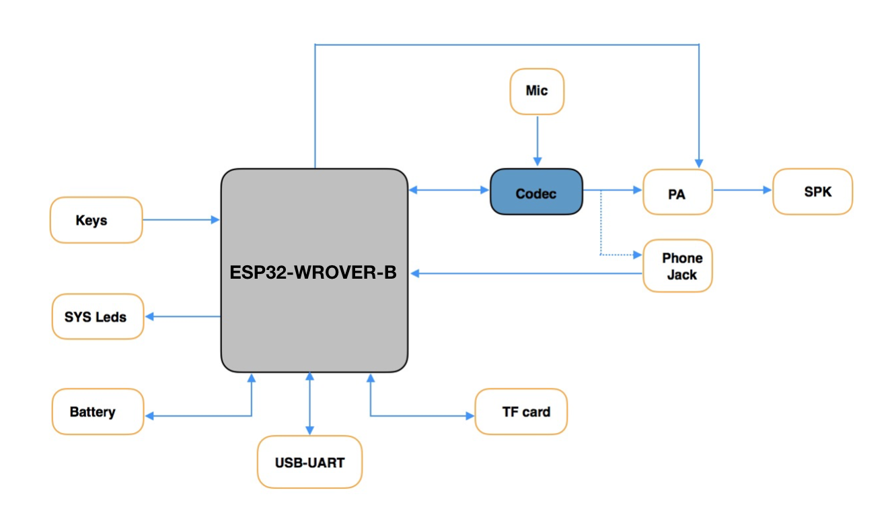
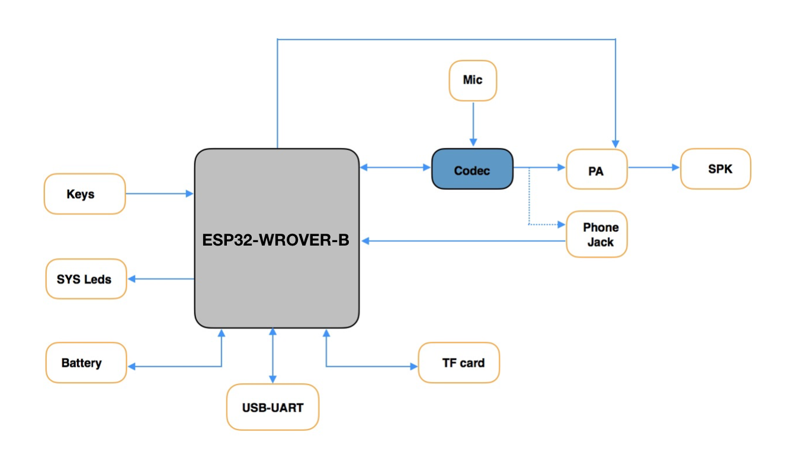
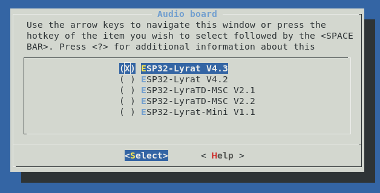
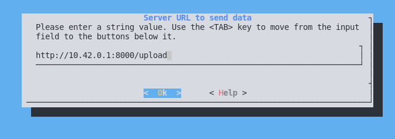
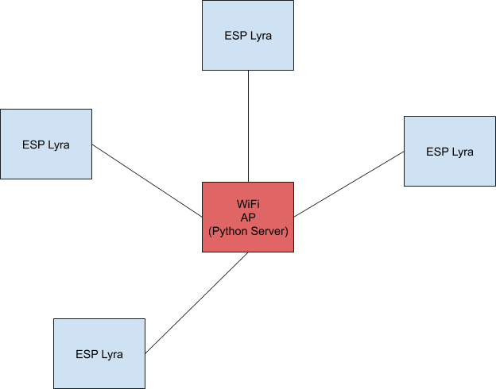

To the second codelab of the Embedded Meetup Group Munich
What's the target audience of this tutorial?
Everybody interested in programming C or C++, Rust anyways :-)
Previous coding experience is helpful
What is an ESP32 LyraT?
The ESP32 LyraT and TyraT mini are two low cost Audio Boards
 

Some basics that you'll also learn in this codelab are:
- Git & Github - learn the basics of source control
This codelab will walk you through the process of setting up the environment to compile and program some example code to an ESP32 and start some own development to extend the functionality of the given sample
What you will build
- A sample application using the ESP32
What you'll learn
- How to build / compile and debug a program for a Microcontroller
- How to program a Microcontroller with your compiled code
- How to create and run a task in a Embedded Device
- Record Audio with the dev board and send it to a server
What you'll need
- A ESP32 LyraT or Lyra mini dev board
- A computer running Linux
- A mini-USB cable to connect the dev board to your computer
- A text editor, or the IDE of your choice
- Basic knowledge of C
This codelab is focused on Embedded Code. Non-relevant concepts and code blocks are glossed over and are provided for you to simply copy and paste.
Setting up the Toolchain
Linux (Ubuntu)
or
wget https://dl.espressif.com/dl/xtensa-esp32-elf-linux64-1.22.0-80-g6c4433a-5.2.0.tar.gzand extract
mkdir -p ~/esp
cd ~/esp
tar -xzf ~/Downloads/xtensa-esp32-elf-linux64-1.22.0-80-g6c4433a-5.2.0.tar.gzor
wget https://dl.espressif.com/dl/xtensa-esp32-elf-linux32-1.22.0-80-g6c4433a-5.2.0.tar.gzand extract
mkdir -p ~/esp
cd ~/esp
tar -xzf ~/Downloads/xtensa-esp32-elf-linux32-1.22.0-80-g6c4433a-5.2.0.tar.gzSet up the build requirements
sudo apt-get install gcc git wget make libncurses-dev flex bison gperf python python-pip python-setuptools python-serial python-cryptography python-future python-pyparsingTo keep the ESP32 makefile system informed about the location of your compiler, you need to export the Compiler Path, you can do it at any time in your open terminal, or add this line to the end of your bashrc at
export PATH="$HOME/esp/xtensa-esp32-elf/bin:$PATH"bashrc file
source ~/.bashrcWindows
Unzip the zip file to C:\ (or some other location, but this guide assumes C:\) and it will create an msys32 directory with a pre-prepared environment.
macOS
Setting up Git
If you have experience with Git and Github already, feel free to jump directly to the next chapter
Linux (Ubuntu)
Install the git package
sudo apt-get install gitSet your git name and email
git config --global user.name "Your Name"
git config --global user.email "your.address@gmail.com"Getting the Source Code
Checking out the espressif Mesh Development Kit can be done with following command, be sure to add the recursive option, to check out all the submodules. The submodules also contain a specific version of the ESP-IDF, the common
git clone --recursive https://github.com/espressif/esp-adf.gitThe checked out source code holds it's own version of the IDF, so there is no need to set up an extra path
git tagWill show you the following output, at the time, this tutorial is created
v1.0
v1.0-beta1
v2.0-beta1
v2.0-beta2
As we want to go with the latest halfway stable release, we checkout
git checkout v2.0-beta2
And update all submodules of this repository
git submodule update --recursiveTo install the idf python requirements run
python -m pip install --user -r $IDF_PATH/requirements.txt
The sample project will just use the reference to the ESP-MDF and lives along with this tutorial in:
git clone https://github.com/locomuco/esp32-tutorial.gitConnecting the DEV-BOARD to your PC is done with a plain USB cable, the Dev Board holds a FTDI chip, that provides a serial interface to the ESP32.
In order to set the bootloader in programming mode on the board:
- Press RST Button
- Press Boot Button
- Release RST Button
- Release Boot Button

Windows COM1 Linux /dev/ttyUSB.. macOS /dev/cu
sudo usermod -a -G dialout $USERFor Arch Linux
sudo groupadd uucp
sudo gpasswd <username> uucpThe Firmware in this tutorial will be built in the checked out esp32-tutorial repo you just checked out.
Build and flash the project by running:
Build your firmware using
makeThe esp-idf uses menuconfig to apply different configurations, just have a try and look through the different options.
make menuconfig
In order to configure the SDK to use your Board HAL layer, select the correct configuration in menuconfig

Programming
Programming the device can be done with espressif tools esptools
make flashThis should give you similar output to below
esptool.py v2.0-beta2 Flashing binaries to serial port /dev/ttyUSB0 (app at offset 0x10000)... esptool.py v2.0-beta2 Connecting........___ Uploading stub... Running stub... Stub running... Changing baud rate to 921600 Changed. Attaching SPI flash... Configuring flash size... Auto-detected Flash size: 4MB Flash params set to 0x0220 Compressed 11616 bytes to 6695... Wrote 11616 bytes (6695 compressed) at 0x00001000 in 0.1 seconds (effective 920.5 kbit/s)... Hash of data verified. Compressed 408096 bytes to 171625... Wrote 408096 bytes (171625 compressed) at 0x00010000 in 3.9 seconds (effective 847.3 kbit/s)... Hash of data verified. Compressed 3072 bytes to 82... Wrote 3072 bytes (82 compressed) at 0x00008000 in 0.0 seconds (effective 8297.4 kbit/s)... Hash of data verified. Leaving... Hard resetting...
Debugging
The makefile system also provides command line tools for console debugging, using the command below, you can see UART prints from the ESP32 going from the ESP32 over the serial line to your terminal on the connected PC.
make monitorShould give you following output
MONITOR --- idf_monitor on /dev/ttyUSB0 115200 --- --- Quit: Ctrl+] | Menu: Ctrl+T | Help: Ctrl+T followed by Ctrl+H --- ets Jun 8 2016 00:22:57 rst:0x1 (POWERON_RESET),boot:0x13 (SPI_FAST_FLASH_BOOT) ets Jun 8 2016 00:22:57 ...
But you can also use cat or screen, whatever you prefer
cat /dev/ttyUSB0 Screen /dev/ttyUSB0 <baudrate>
The programming and console baudrate can be changed using menuconfig as described in the previous step, see selection below, this speeds up the development cycle by a few seconds

Congrats, you now can do the full compile / program / debug cycle :-)
We have one dedicated PC running with a server to collect all audio samples created by the nodes.

These items can be configured through the menuconfig option: Example Configuration

The sample application can be found in
esp-adf/examples/recorder/pipeline_raw_http
If you press the record button, your voice will be recorded locally,, once released, it will be sent to the server.